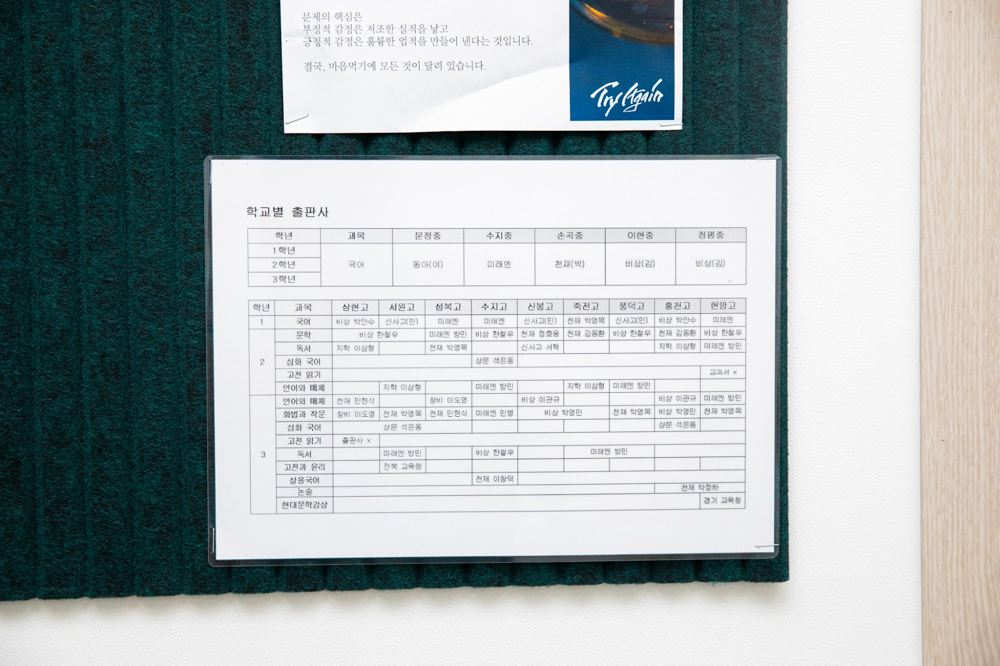
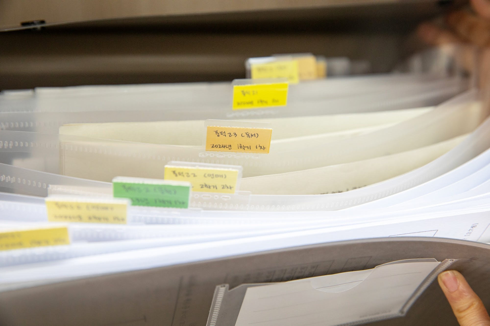
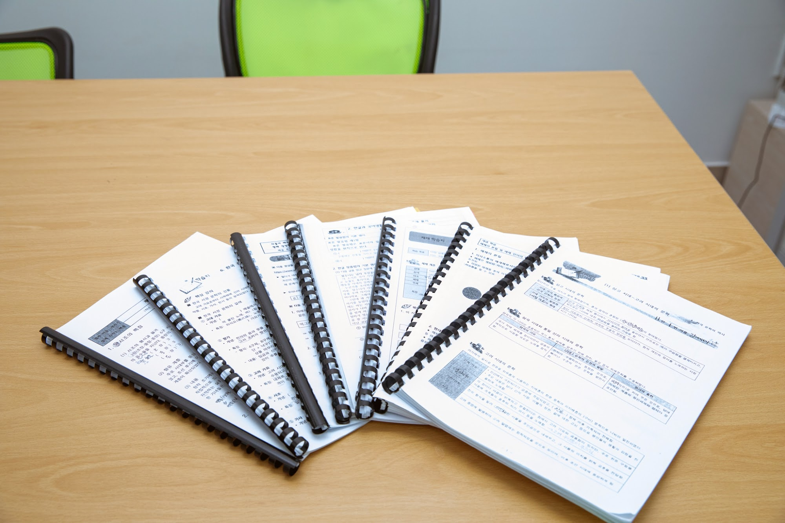
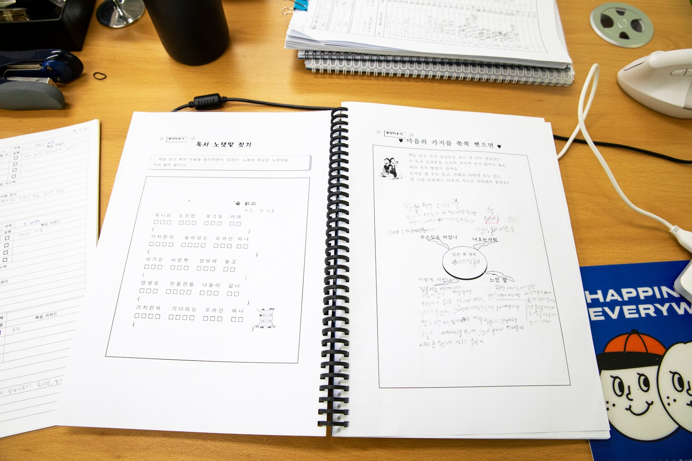

안녕하세요, 경기 용인시 수지구 풍덕천동의 와와학습코칭 수지점입니다. 문정로 상가 건물에 있는 센터로, 풍천초등학교·정평초등학교·신월초등학교·토월초등학교 아이들과 문정중학교·수지중학교·손곡중학교·이현중학교·정평중학교 학생들, 그리고 수지고등학교·풍덕고등학교·성복고등학교·상현고등학교·서원고등학교·신봉고등학교·죽전고등학교·용인홍천고등학교(홍천고)·현암고등학교로 이어지는 학생들이 오가는 동네입니다.
오늘 보여 드릴 것은 화려한 시설이 아니라 게시판에 코팅해 붙여 둔 표 한 장입니다. 제목은 '학교별 출판사'입니다.
같은 학년 국어인데, 옆 학교와 교과서가 다릅니다
표는 두 칸으로 나뉘어 있습니다. 위쪽은 중학교 국어입니다. 사진 속 표에는 문정중학교는 동아, 수지중학교는 미래엔, 손곡중학교는 천재, 이현중학교와 정평중학교는 비상으로 적혀 있습니다. 아래쪽은 고등학교입니다. 1학년 국어만 봐도 학교마다 출판사가 갈리고, 2·3학년으로 내려가면 문학, 독서, 심화 국어, 고전 읽기, 언어와 매체, 화법과 작문, 실용 국어, 논술, 현대문학감상까지 과목이 늘어나면서 칸이 더 촘촘해집니다. 어떤 칸은 비어 있고, '교과서 없음'이나 교육청 자료로 적힌 칸도 있습니다.
수학이나 영어를 생각하면 이 표의 의미가 잘 안 와닿을 수 있습니다. 하지만 국어는 사정이 다릅니다. 국어 내신 시험 문제는 그 학교가 쓰는 교과서에 실린 지문에서 나옵니다. 같은 '중학교 2학년 국어'라도 A 출판사 교과서에 실린 소설과 B 출판사 교과서에 실린 소설이 다릅니다. 학습 목표가 비슷해도 다루는 작품, 활동 문제, 단원 순서가 다릅니다.
그래서 "국어 문제집 한 권을 사서 풀린다"는 방법이 국어에서는 잘 통하지 않을 때가 많습니다. 시중 문제집은 여러 교과서의 공통 개념을 다루지만, 정작 시험에 나오는 지문은 우리 아이 학교 교과서에만 실려 있기 때문입니다. 표를 게시판에 붙여 둔 이유가 여기 있습니다. 아이가 어느 학교 몇 학년인지를 들으면, 어느 출판사 교재와 어떤 지문으로 준비해야 하는지가 바로 정해지도록 하기 위해서입니다.

라벨에 학교·학년·과목·학기가 다 적혀 있는 이유
두 번째 사진은 자료 보관함입니다. 파일마다 노란색·초록색 라벨이 붙어 있고, 거기에는 학교 이름과 학년, 과목, 몇 학기 몇 차 시험인지가 손글씨로 적혀 있습니다. 풍덕고등학교 3학년 독서 과목의 어느 학기 1차 시험, 2학년 언어와 매체의 2차 시험 하는 식입니다.
기출 자료를 학교별로 모아 두면 아이에게 이렇게 말해 줄 수 있습니다. "작년 이 학교 이 과목 시험에서는 서술형이 몇 문항 나왔고, 교과서 밖 지문이 나왔는지 아닌지" 같은 이야기입니다. 국어 시험은 학교마다 성격이 꽤 다릅니다. 교과서 지문만 그대로 내는 학교가 있고, 배운 개념을 처음 보는 지문에 적용하게 하는 학교가 있습니다. 서술형 비중이 큰 학교라면 같은 시간을 써도 문장으로 답을 써 보는 연습에 더 무게를 두어야 합니다.
이 차이를 모른 채 시험 2주 전에 시작하면, 아이는 열심히 했는데 시험지에서 처음 보는 형식에 당황합니다. 기출을 학교별로 쌓아 두는 일은 화려하지 않지만, 이 당황을 줄이는 가장 확실한 방법입니다.

개념은 따로, 지문은 학교 것으로
세 번째 사진은 수지점에서 쓰는 국어 자료들입니다. 스프링으로 제본된 자료를 펼쳐 보면 고전 시가(시조·향가·고려가요)의 갈래별 특징, 한글 맞춤법의 기본, 매체 관련 개념처럼 어느 교과서를 쓰든 공통으로 알아야 하는 것들이 정리돼 있습니다.
국어 공부를 두 갈래로 나눠 보면 이해가 쉽습니다.
- 공통 개념 — 갈래별 특징, 문법, 매체, 글의 구조를 읽는 법. 학교와 상관없이 쌓이고, 나중에 수능 국어로도 이어집니다.
- 학교별 지문 — 우리 아이 학교 교과서에 실린 작품과 그 학교 선생님이 강조한 활동 문제. 이번 시험 점수를 직접 좌우합니다.
둘 중 하나만 해서는 안 됩니다. 공통 개념만 하면 시험 범위 지문을 처음 보는 상태로 시험장에 들어가고, 학교 지문만 외우면 다음 학년에서 처음부터 다시 시작해야 합니다. 그래서 수지점은 평소에는 개념 자료로, 시험 기간에는 학교 교과서와 기출로 무게를 옮깁니다. 게시판의 출판사 표는 그 전환을 빠르게 하기 위한 안내판인 셈입니다.

초등학생에게는 시험이 아니라 읽기부터
마지막 사진은 초등학생이 쓰는 독서 활동지입니다. 왼쪽은 읽은 책 내용을 생각하며 익숙한 동요에 새 노랫말을 지어 보는 활동이고, 오른쪽은 읽은 책 제목을 가운데 동그라미에 적고 '나오는 사람', '무슨 일을 하였나', '어떻게 자랐나', '느낀 점'으로 가지를 뻗어 나가는 활동입니다. 사진 속 지면은 한 아이가 손글씨로 빼곡히 채워 놓은 것입니다.
독서 감상문을 쓰라고 하면 "재미있었다"로 끝나는 아이가 많습니다. 줄글로 한 번에 쓰라고 하니 어디서 시작할지 모르는 것입니다. 가지를 뻗는 형식은 그 부담을 나눕니다. 인물을 적고, 사건을 적고, 마지막에 내 생각을 붙이면 어느새 한 편이 됩니다.
이 활동이 중학교 국어와 이어집니다. 중학교 시험에는 인물의 심리와 태도, 사건의 흐름, 글쓴이의 관점을 묻는 문항이 꾸준히 나옵니다. 초등학생 때 '누가 나오고 무슨 일이 있었는지'를 자기 말로 정리해 본 아이는 그 질문 앞에서 덜 낯설어합니다. 초등 국어를 시험 대비로 시작할 필요는 없습니다. 읽고 나서 자기 말로 한 번 정리해 보는 습관이면 충분합니다.
집에서 해 볼 수 있는 국어 점검 세 가지
- 교과서 출판사 확인 — 아이의 국어 교과서 표지 아래쪽에 출판사 이름이 적혀 있습니다. 문제집을 고르실 때 이 이름부터 맞춰 주세요. 국어는 '자습서·평가문제집'이 교과서 출판사별로 따로 나옵니다.
- 시험 범위의 지문을 소리 내어 읽기 — 범위에 있는 작품 한 편을 아이가 소리 내어 읽게 해 보세요. 자꾸 더듬는 문장이 있다면 그 문장의 뜻을 모르는 것입니다.
- 서술형 한 문항 써 보기 — "이 인물이 왜 그렇게 행동했는지 두 문장으로 써 볼래?"라고 물어보세요. 말로는 잘하는데 쓰지 못한다면, 아는 것과 답안으로 옮기는 것 사이에 연습이 더 필요하다는 신호입니다.
수지점 찾아오시는 길
와와학습코칭 수지점은 경기 용인시 수지구 문정로 13, 중수프라자 503호에 있습니다. 풍천초등학교·정평초등학교·신월초등학교·토월초등학교, 문정중학교·수지중학교·손곡중학교·이현중학교·정평중학교, 그리고 수지고등학교·풍덕고등학교·성복고등학교 학생들이 가까이에서 오갈 수 있는 곳입니다.
학습 진단과 상담은 무료입니다. 아이의 국어 교과서 한 권을 들고 오셔서, 이번 학기 어느 작품이 시험 범위인지부터 같이 펼쳐 보셔도 좋겠습니다.